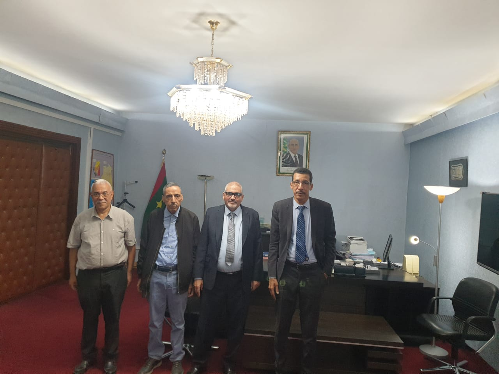

Flamme 01
Qualité du lait
Analyse microbiologique, suivi des troupeaux, optimisation de l'alimentation et de la traite.
R&D appliquée, stratégie de mutualisation et coopération Sud-Sud — pour bâtir une industrie fromagère marocaine de référence.
Des programmes ciblés, conduits en partenariat avec l'IAV Hassan II, l'INRA, l'Université Hassan II et les CRRA.
Flamme 01
Analyse microbiologique, suivi des troupeaux, optimisation de l'alimentation et de la traite.
Flamme 02
Étude des ferments endémiques marocains, sélection de souches autochtones, AOC en projet.
Flamme 03
Matériaux biosourcés, réduction du plastique, optimisation logistique et empreinte carbone.
Flamme 04
Blockchain & QR codes pour relier le pré à l'assiette : transparence totale, confiance renforcée.
Flamme 05
Modèles prédictifs pour la production laitière, alertes sanitaires, optimisation des intrants.
Flamme 06
Académies coopératives, partenariats universitaires, programmes pour jeunes et femmes rurales.
La stratégie du Cluster consiste à regrouper des entités pour assurer des complémentarités et rassembler les compétences — technique, commercial, marketing, innovation, financier — afin de constituer une force collective.
De nombreuses entités disposent de produits innovants mais peinent à percer face à des concurrents structurés. Or, le Maroc, membre fondateur de l'OMC et lié par des accords de libre-échange avec plus de 55 pays, accueille de grandes marques internationales face auxquelles les PME luttent.
L'objet principal du CFFA est de stimuler les projets collaboratifs innovants : aliment de bétail, production laitière en quantité et qualité, industrie fromagère.
Un projet structurant inscrit dans l'Initiative Royale Atlantique et la coopération Sud-Sud gagnant-gagnant.



Accords signés avec des partenaires mauritaniens pour produire de l'aliment de bétail à Rosso, près du fleuve Sénégal, dont le débit dépasse 20 milliards de m³/an — soit 6× celui de l'Oued Sebou.
01
Unités d'aliment de bétail
02
Fermes laitières & d'engraissement
03
Unité de protéines laitières
04
Abattoir
05 · Cible finale
Création d'un groupement agro-industriel maroco-mauritanien, extensible au Sénégal, à la Guinée, à la Côte d'Ivoire — au cœur de la coopération Sud-Sud.
Vision atlantique
Inscrit dans l'Initiative Royale Atlantique et la coopération Sud-Sud gagnant-gagnant.
Universités, instituts publics et centres régionaux qui co-construisent l'innovation avec nous.